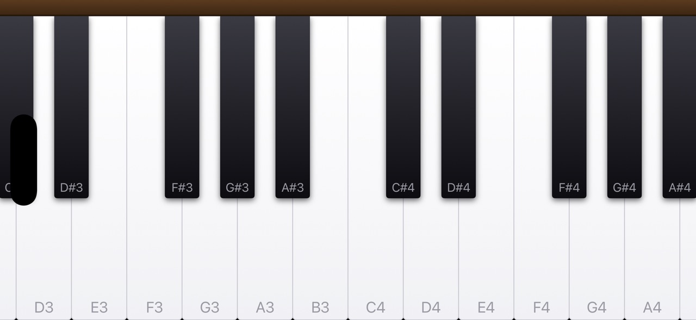
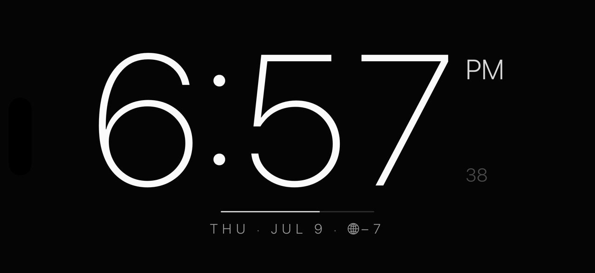
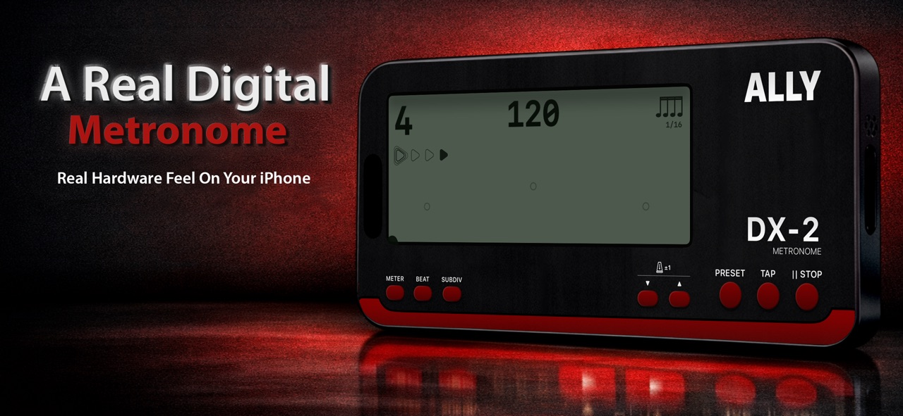

AllyFast
A focused fasting timer, a clear view of your progress, and a history that stays with you.
App StoreExplore
A LITTLE WORLD OF POSSIBILITIES
Find your focus. Play a few notes. Beat the next boss.
Meet the apps that make up AllyWorld.



THE ALLYWORLD COLLECTION
A focused fasting timer, a clear view of your progress, and a history that stays with you.
Meet the free Lite edition of AllyFast: a straightforward timer for your fasting routine.
Turn your screen into a fullscreen clock, or keep the cities you care about close at hand.
A metronome with the feel of a real instrument. Tap in a tempo and settle into your practice.
The essential AllyMetronome experience, with tap tempo, subdivisions, and a clear, steady pulse.
A sampled concert grand and a glowing synthwave keyboard. Open it, touch the keys, and play.
A browser-based notation editor for putting ideas on the page, with keyboard-driven note entry.
The companion to AllyScore: a mobile-friendly library and reader for your scores and shared books.
A musical boss battle starring the Finger Family. Follow the rhythm through an unfolding rescue adventure.
An arcade-inspired vertical shooter with enemy formations, weapon upgrades, and multipart bosses.
A NOTE FROM ALLYWORLD
AllyWorld brings together practical tools, musical instruments, and games. Each app has its own personality and a simple reason to be here: to help you do something you enjoy.
From a steady beat to a new high score, there’s a little world to explore.
Say helloWE’RE HERE TO HELP
Find help, privacy information, and a way to reach us.